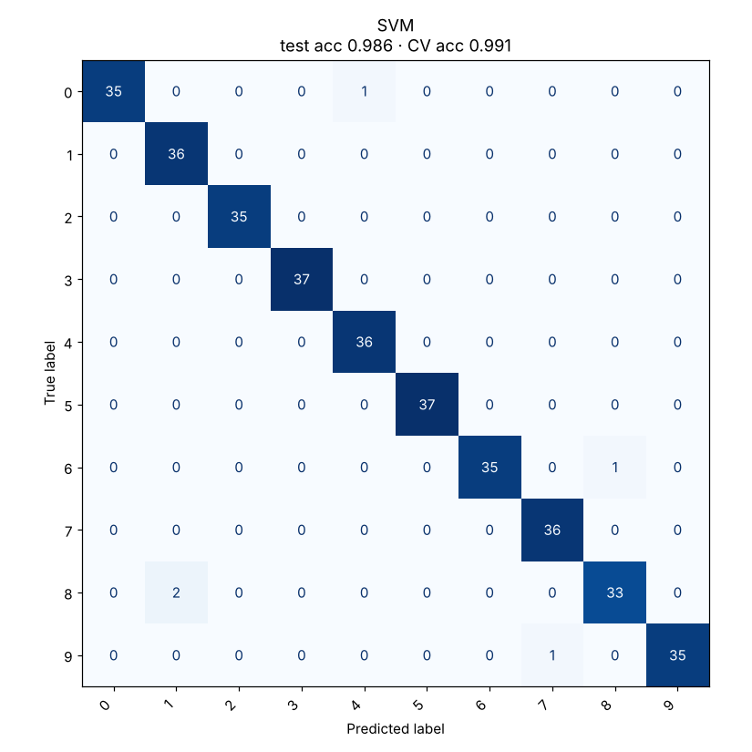

Support Vector Machine
Finds the boundary with the widest possible gap to the nearest points of each class.
Try it
Experiment: Switch to the RBF kernel on Circles, then raise γ to its maximum: each point gets its own island. That’s overfitting through the kernel.
The idea
Many lines can separate two groups. The SVM picks the one with the widest “street” between them, on the idea that a boundary with breathing room generalises best. Only the points on the edge of the street matter. These are the support vectors, circled in the demo. Move any other point and nothing changes.
With the kernel trick, an SVM can draw curved boundaries: the RBF kernel measures similarity between points, which is like mapping them into a higher-dimensional space where a straight cut works.
How it works, step by step
- Look for a boundary that separates the classes with the largest margin.
- Allow some points inside the street or on the wrong side, with penalty
C: large C means few violations allowed (tight fit), small C means a wider, more forgiving street. - Optionally replace dot products with a kernel such as RBF, controlled by γ (how far each point’s influence reaches).
- Classify new points by which side of the boundary they fall on.
RBF kernel: K(a, b) = exp(−γ ‖a − b‖²)Only support vectors have αᵢ > 0, which is why the rest of the data does not affect the boundary.
Strengths and weaknesses
Strengths
- Very strong on small and medium data sets
- Works well with many features, even more features than rows
- Kernels give flexible boundaries
- The best classic model in this repo (99.1% CV on Digits)
Weaknesses
- Slow on very large data sets (training grows roughly with n² to n³)
- Sensitive to C and γ; needs tuning
- Needs feature scaling
- No probabilities out of the box
Use it when: Medium-sized data with clear structure: images of digits, text, bioinformatics.
Avoid it when: Hundreds of thousands of rows, or when you need calibrated probabilities quickly.
In this repository
Dataset: Digits (1797 rows, 64 features)

from sklearn.svm import SVC
from sklearn.pipeline import make_pipeline
from sklearn.preprocessing import StandardScaler
model = make_pipeline(StandardScaler(), SVC(kernel="rbf", C=10, gamma="scale"))
model.fit(X_train, y_train)Full code: models/05_svm. Train it on your own data with
python models/05_svm/train.py --data your.csv --target column.
Check yourself
Only these points have non-zero weight in the solution.
High C means a narrow street that fits training data closely; it can overfit.
Small reach means very local, wiggly boundaries.
Answer all three correctly to mark this model as learned.